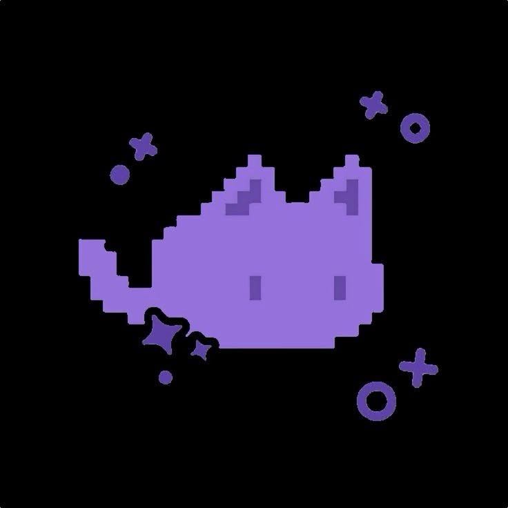
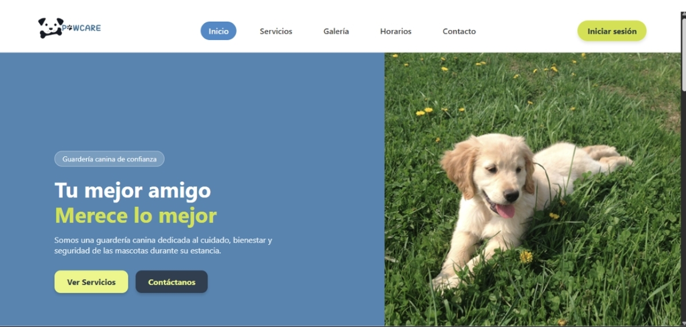
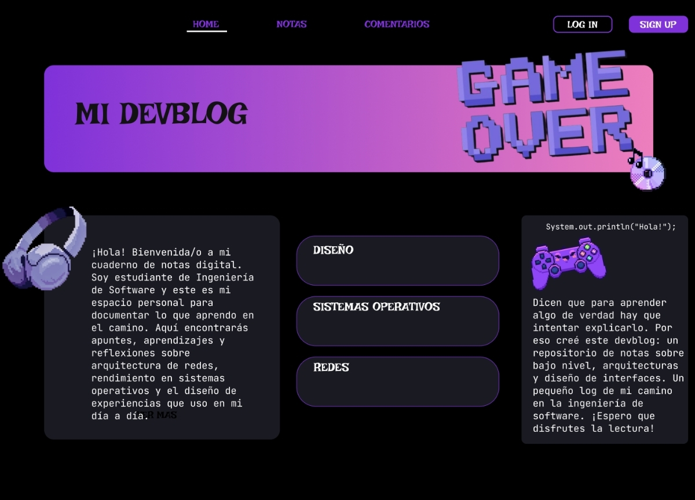

Diseño
- Figma
- UML

Hola, soy un estudiante de software.
Me fascina lo que pasa detrás de pantalla: desde el viaje de los datos por la red y el rendimiento a bajo nivel, hasta esa interfaz fluida con la que interactúas todos los días. Como estudiante de Ingeniería de Software, combino arquitectura sólida y optimización para construir experiencias digitales que realmente funcionen.
Más allá de las clases y los libros, me encanta ponerme a prueba. Fuera de la rutina, siempre me encontrarás iniciando algún proyecto personal solo por la diversión de aprender, explorar tecnologías nuevas o probar ideas que se me ocurren en el camino. Me apasiona colaborar, conectar con otras personas y sumar en proyectos donde pueda aportar, aprender y construir cosas geniales.
Sistema de Gestión y Reservas para Guarderías Caninas
Plataforma web integral diseñada para optimizar la administración y el agendamiento de citas en centros de cuidado mascotero. Cuenta con un sistema de roles independientes: un módulo administrativo para gestión de servicios, control de mascotas y personalización de contenido en tiempo real; y un portal de clientes para el agendamiento fluido de citas.

Plataforma de Documentación Técnica
Espacio web interactivo con estética gaming diseñado para estructurar, organizar y publicar apuntes de ingeniería de software. Cuenta con módulos categorizados por áreas de estudio (Redes, Sistemas Operativos y Diseño UX/UI), gestión de notas en tiempo real y un sistema de autenticación de usuarios para interacción y comentarios.
